Data, apps, and agents: the future of app dev with Rayfin
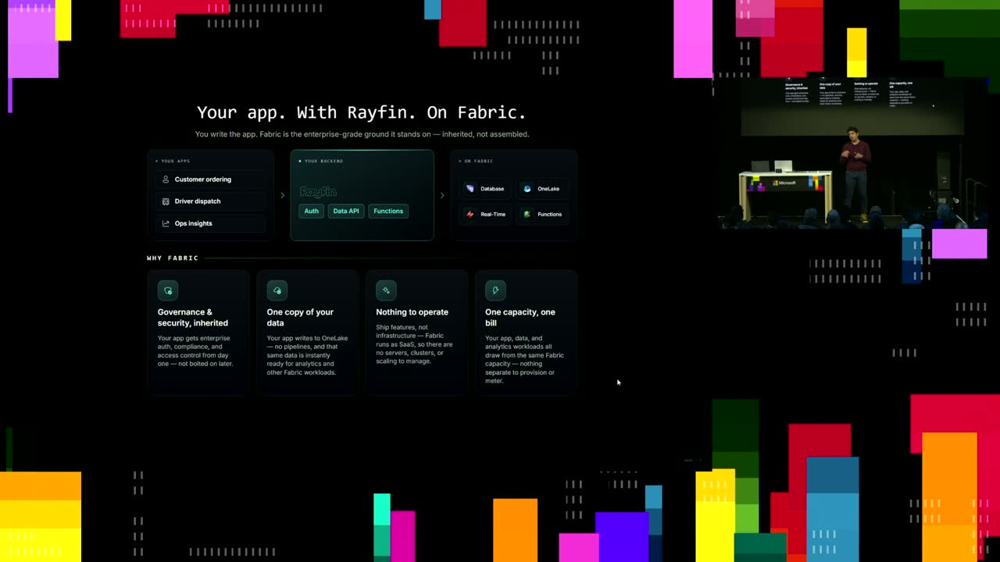
Official description
Apps are coming to the data platform. With Rayfin, your entire backend is expressed in code—and Rayfin translates it into the services it needs: databases, functions, and more. Write the code yourself, or describe your app and let agents generate it for you. Either way, deploy with the CLI as a secure, scalable solution. With native access to Fabric data, analytics, and AI, Rayfin eliminates backend stitching so teams move from idea to impact faster. Seating for this session is first-come, first-served. Add it to your schedule to plan your day and arrive early to secure a spot.
Summary
Overview
Rayfin is a backend platform for the AI coding era that lets developers and agents define an entire application backend—database, functions, storage, and access policies—in code, then deploy it to Microsoft Fabric with a single CLI command. The session demonstrates building both an operational delivery app and an analytics dashboard, and shows how Fabric provides enterprise-grade security, compliance, and unified data access through OneLake.
Key announcements
- Rayfin, the backend for the AI coding era (00:02:34
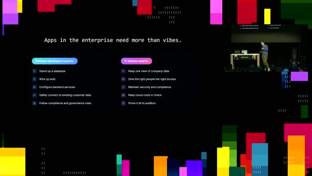
m05s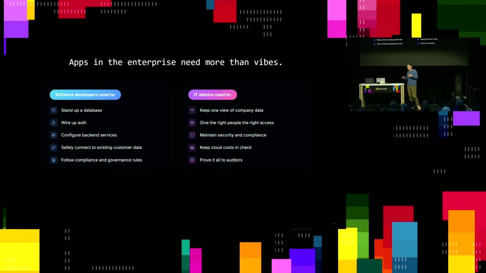
m10s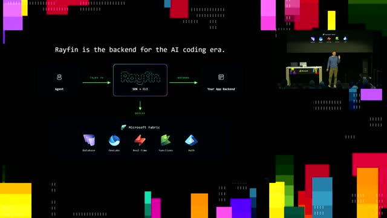
p05s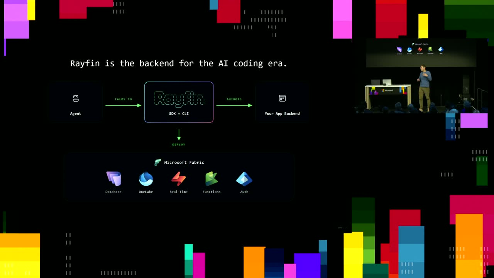
p10s) — An SDK and CLI for authoring a full backend (database, functions, storage, access policies) in code, deployable to Fabric with one command for out-of-the-box enterprise security and compliance. - App as a new Fabric artifact type (00:18:51
 m05s
m05s m10s
m10s p05s
p05s p10s) — Apps can be created directly from the Fabric portal via "new item," generating a deployed app artifact with a child SQL database in the workspace.
p10s) — Apps can be created directly from the Fabric portal via "new item," generating a deployed app artifact with a child SQL database in the workspace. - Data app template with Power BI (00:15:45
 m05s
m05s m10s
m10s p05s
p05s p10s) — A template co-built with the Power BI team for building applications directly on the semantic layer, comprising a data package, a React/Vega-Lite visual package, and agent skills.
p10s) — A template co-built with the Power BI team for building applications directly on the semantic layer, comprising a data package, a React/Vega-Lite visual package, and agent skills. - Connectors for existing Fabric data (00:12:36
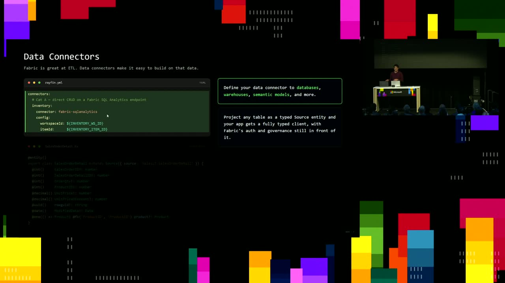
m05s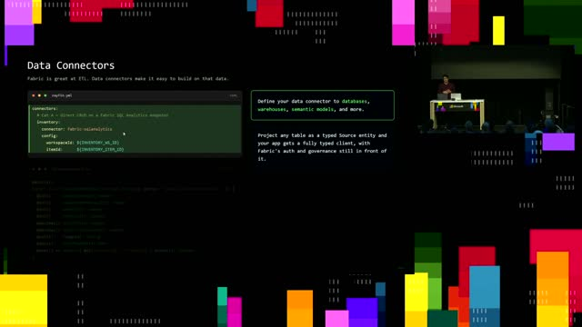
m10s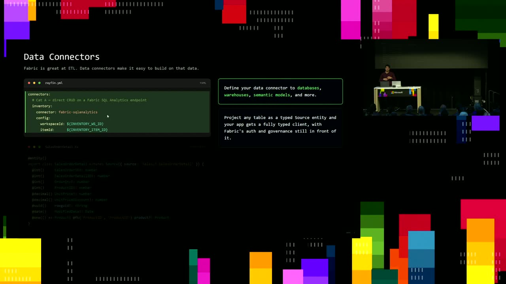
p05s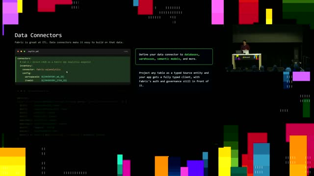
p10s) — Declarative connectors let apps read from and write back to databases, warehouses, and semantic models in OneLake, with agent instructions that pull schemas into typed classes. - Replit partnership (00:25:50
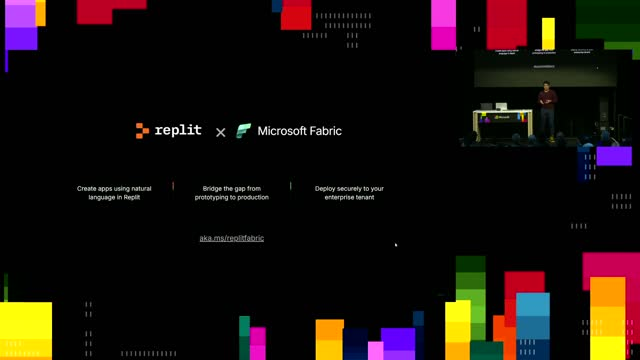
m05s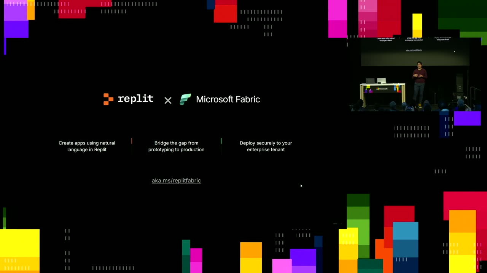
m10s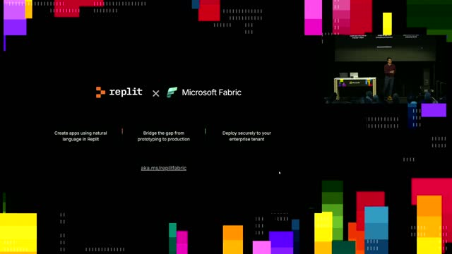
p05s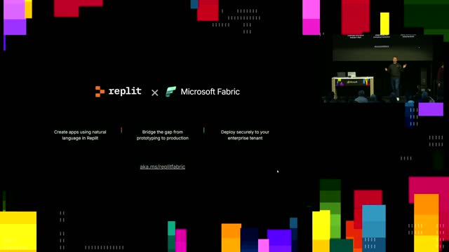
p10s) — Replit's browser-based agentic IDE can build and deploy apps into a Rayfin environment for non-technical users, announced on stage with Satya Nadella the prior day [inferred] and currently in private beta. - Roadmap commitments (00:29:10
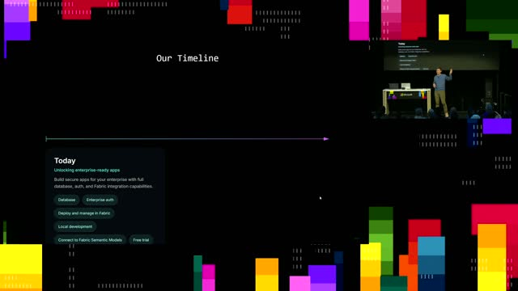
m05s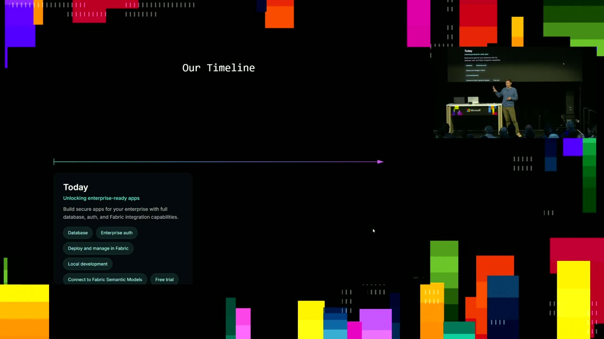
m10s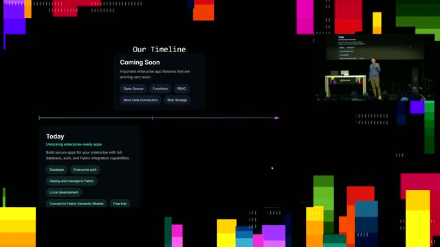
p05s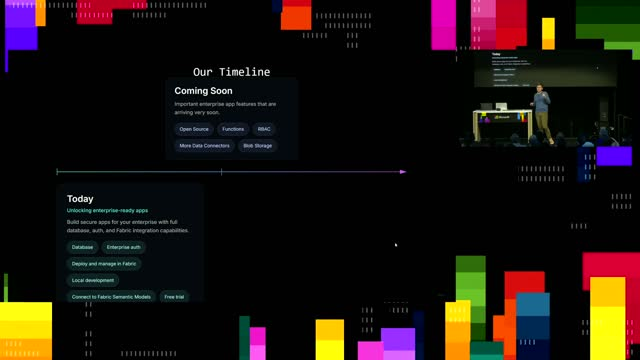
p10s) — Upcoming support for functions, RBAC, additional OneLake and Blob storage connectors, OIDC and social login, real-time services, a perpetual free tier, and open-sourcing part of the Rayfin runtime for self-hosting.
{kind=link}
{kind=link}
{kind=link}
{kind=link}
{kind=link}
{kind=link}
{kind=link}
{kind=link}
{kind=link}
{kind=link}
{kind=link}
{kind=link}
{kind=link}
{kind=link}
{kind=link}
{kind=link}
Topics covered
- Defining database tables, column constraints, and relationships using TypeScript decorators (
@entity, property decorators) - Code-defined security via role decorators and policy functions (e.g., authenticated users seeing only their own records)
- Automatic schema migration when the data model changes
- YAML configuration: SQL dialect selection (Microsoft SQL now, Postgres planned), front-end/back-end separation, shared backends, and per-app scopes
- Backend TypeScript functions deployed as sandboxed Fabric functions for secure credential injection and external service calls
- Templates for organizational standardization, including tools, MCP servers, sample code, and libraries
- Fabric advantages: OneLake as the "OneDrive for data," SaaS provisioning, unified capacity billing, and a dev-to-staging-to-production workspace workflow
- Local development against remote or Docker-based (experimental) services
Notable quotes
"Rayfin is the back end for this new AI coding era." — Ben Zulauf
"For years, applications and analytics lived in separate worlds... But Rayfin brings that together, and now our data app template does something really unique because it's allowing you to build applications directly on your semantic layer." — Sujata
"With Rayfin, we finally have both fast development and the tools we prefer and the confidence that our applications were on top of our enterprise data platform." — Carl, quoting test user Leatherman
Products and tools mentioned
- Rayfin
- Microsoft Fabric
- OneLake
- Fabric SQL database
- Power BI
- Semantic models
- Vega-Lite
- React
- VS Code
- GitHub Copilot coding agent
- Replit
- Microsoft SQL Server
- PostgreSQL
- Azure
- Docker
- Blob storage
- MCP servers
Speakers featured
- Ben Zulauf — presenter, Rayfin team
- Sachin Patney — presenter, Rayfin team
- Sujata — Power BI team [inferred]
- Carl — Technical Lead at Replit, leading the Rayfin and Fabric integration
- Chris Anderson — Rayfin team (referenced as leading a later 3:00 session)
Follow-up resources
- github.com/Microsoft/Rayfin — to try Rayfin and provide feedback
- Replit private preview sign-up
- Additional Rayfin session with Chris Anderson, same day at 3:00
Frames
{kind=link}
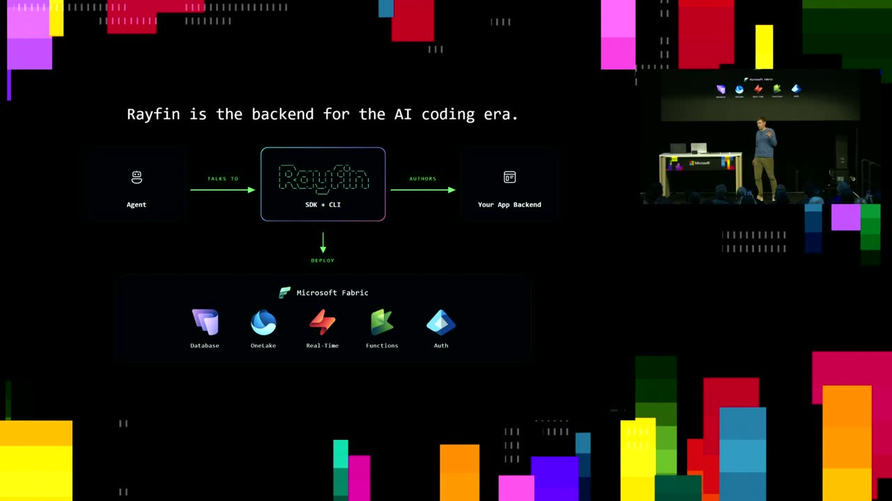
{kind=link}
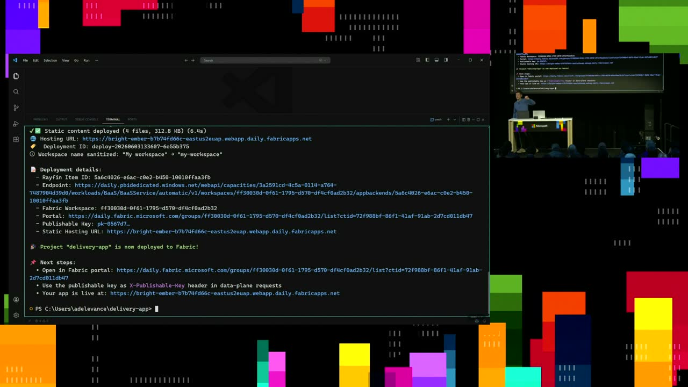
{kind=link}
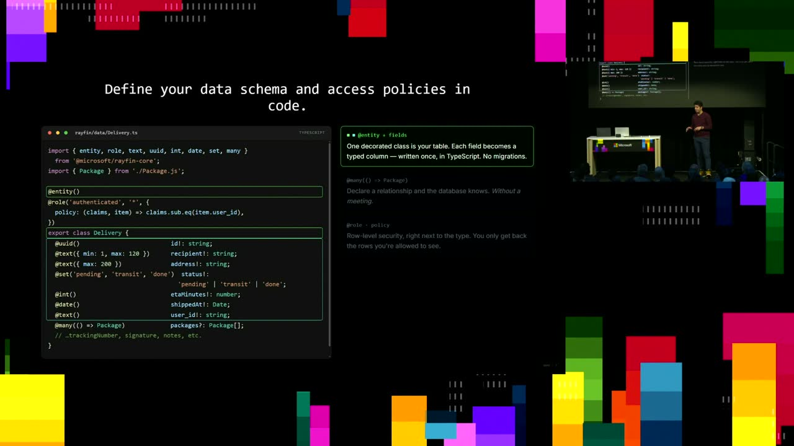
{kind=link}
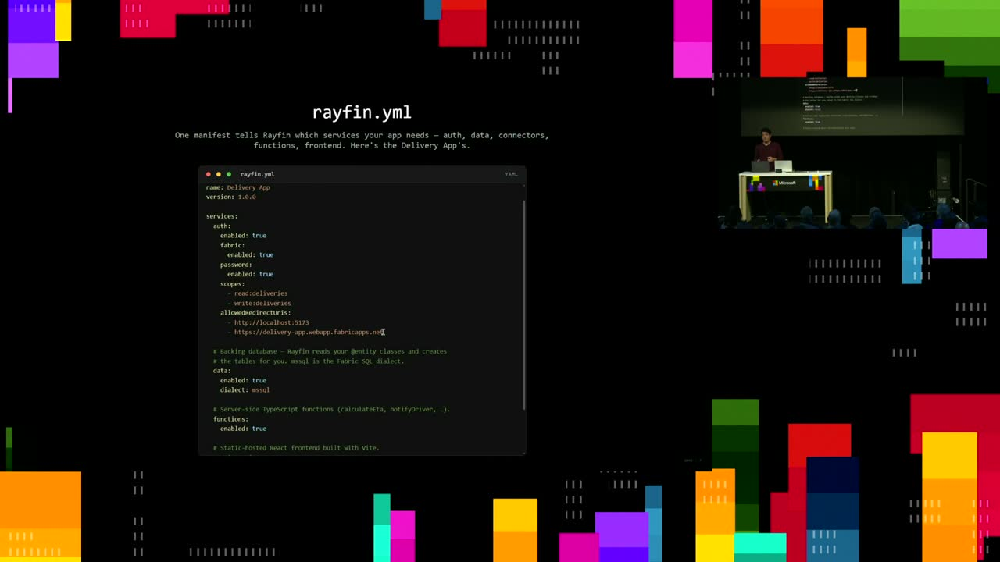
{kind=link}
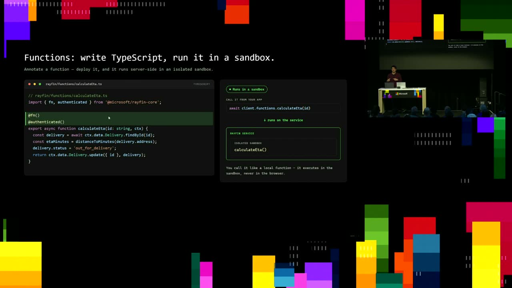
{kind=link}
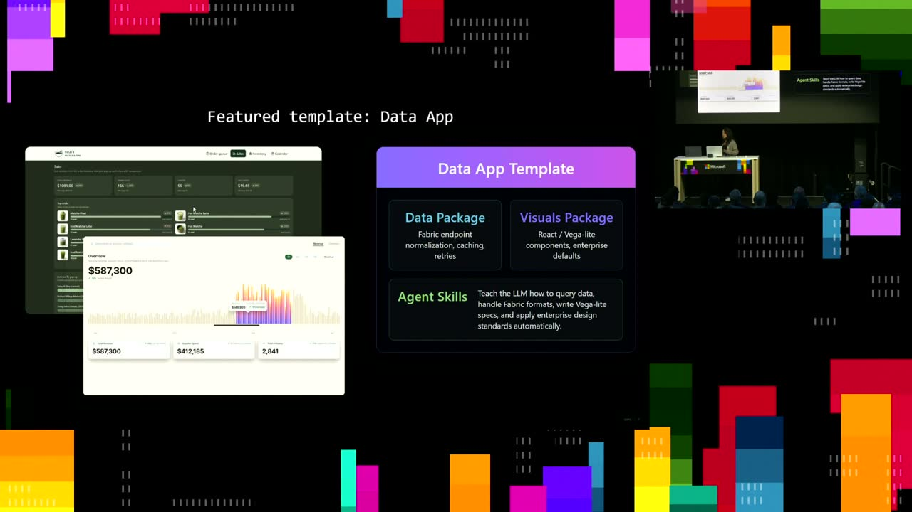
{kind=link}
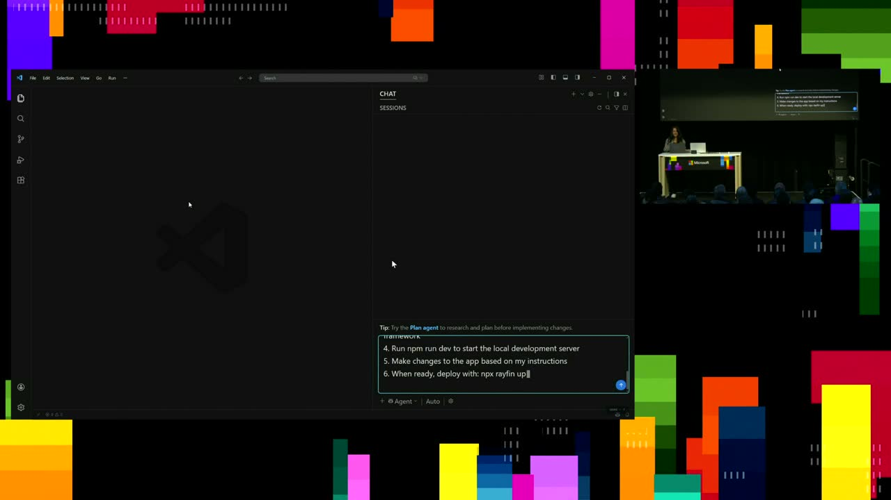
{kind=link}
{kind=link}
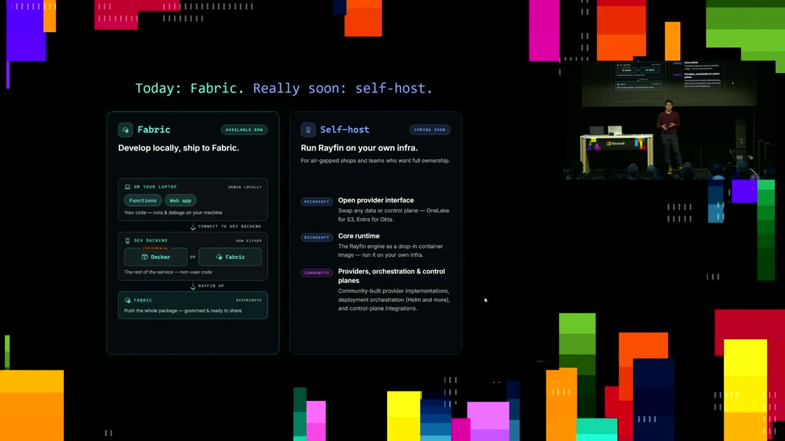
{kind=link}
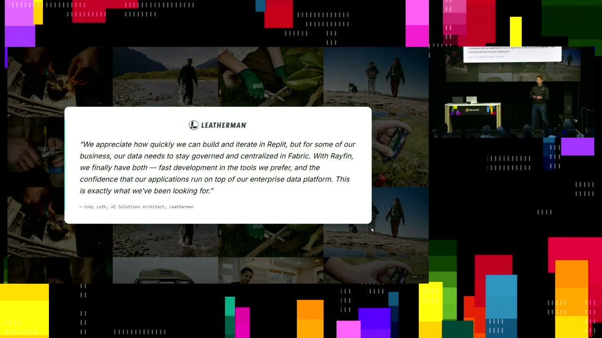
{kind=link}
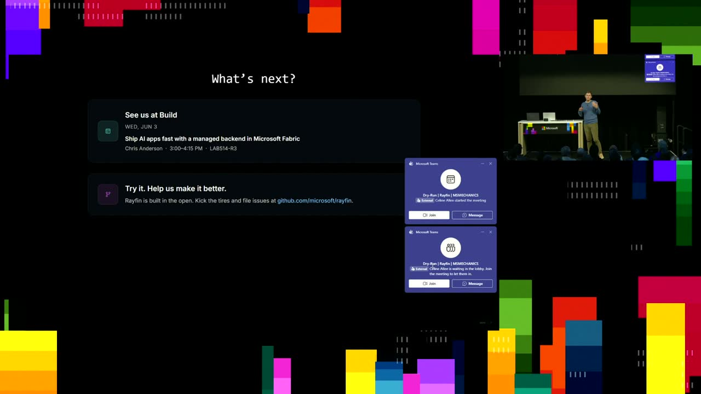


{kind=link}
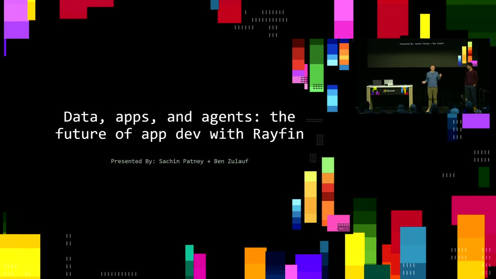
Transcript
Show / hide transcript (39,549 chars)
[00:00:00] Welcome, everybody. [00:00:02] My name is Ben and this is Sachin. [00:00:05] And we're incredibly excited to talk to you today about [00:00:09] the future of app development with Raefen. [00:00:14] So I'm sure everybody in this room is probably familiar [00:00:18] with the fact that agentic coding is really transforming application [00:00:23] development and it's really democratizing who can build applications. [00:00:28] So I coach AU 5 girls soccer team, the Mia [00:00:32] Hamsters with a very good friend, Brent. [00:00:36] And Brent is not a software engineer by any means, [00:00:40] but a few months ago he discovered a gente coding [00:00:44] and he just started like spitting out applications. [00:00:48] So he's building season stats apps, he's building snack schedules, [00:00:53] he's building practice plans. [00:00:56] And for me as somebody who got into software development [00:01:00] because I love to make things, it's incredibly fun and [00:01:03] inspiring to see the brinks of the world all of [00:01:06] a sudden become makers. [00:01:08] And I think that's the power of agentic coding. [00:01:12] It has the ability to turn the brinks of the [00:01:14] world into makers and it has the ability to turn [00:01:17] existing software engineers into kind of super makers. [00:01:23] But as you go from coding a kids soccer app [00:01:27] into a corporate environment where you're dealing with like real [00:01:32] customer data and real compliance needs, all of a sudden [00:01:37] sort of the opportunity of vibe coding, the promise of [00:01:41] it starts to sort of fall apart. [00:01:46] And that so if you're a software engineer, apps in [00:01:50] the enterprise, you find they need more than just kind [00:01:55] of good vibes. [00:01:57] As a software engineer, you need to build databases with [00:02:00] real authentication. [00:02:02] You need to configure back end services. [00:02:04] You need to safely connect to existing customer data, and [00:02:08] you need to be able to do all of this [00:02:10] while following your company's compliance and governance rules. [00:02:15] And if you're on the IT admin side of things, [00:02:18] it's even more complicated. [00:02:19] In this new world, you have to make sure that [00:02:22] only the right people have the right access to the [00:02:25] right data. [00:02:26] And it's really on you to make sure that you're [00:02:29] maintaining your company's security and compliance posture. [00:02:34] And that's why we built Rayfind. [00:02:36] So Rayfind is the back end for this new AI [00:02:39] coding era. [00:02:41] It makes it easy for a human and an agent [00:02:44] to define an entire back end in code, so it's [00:02:48] an SDK. [00:02:49] In CLI, you can author the back end in code, [00:02:52] so that includes your database, your functions, your storage, your [00:02:58] access policies are all defined in code. [00:03:01] So it's easy for both the agent and a human [00:03:04] to be able to understand and operate it. [00:03:07] And when you're ready to deploy that application, you can [00:03:11] do so with just a single CLI command and deploy [00:03:14] it right to Microsoft Fabric, where all those resources are [00:03:18] provisioned and managed for you and you get enterprise grade [00:03:22] security compliance right out of the gate. [00:03:27] So let's stop sort of talking around it. [00:03:31] Let's do a quick demo of what this actually looks [00:03:33] like. [00:03:34] Let's say I work for Zaba, a home improvement store, [00:03:38] and we have a CEO who's very excitable and he [00:03:41] is super pumped about launching a new home delivery service. [00:03:46] So for the first time, I can now get my [00:03:49] hammers and nails and everything else delivered directly to my [00:03:54] door, which is great. [00:03:56] But now we need a whole suite of applications to [00:03:58] make that possible. [00:04:00] So we need a application for our delivery service drivers. [00:04:04] We need apps for the management to be able to [00:04:07] actually like monitor how this service is performing. [00:04:11] And as the software engineer, all of a sudden all [00:04:13] of this falls on me to build. [00:04:16] So fortunately I have Raefen and I can open up [00:04:20] my VS Code editor with a terminal window open and [00:04:24] with a simple Rafe and create command, I can start [00:04:28] to create a project that is built to have not [00:04:32] only a beautiful front end like agents are so good [00:04:36] at, but also a great back end as well. [00:04:40] So I'll go ahead and walk through the setup and [00:04:43] it's going to ask me to choose a template. [00:04:46] And right now we have a couple of basic starter [00:04:49] templates. [00:04:49] To begin with, I'll go ahead and choose the blank [00:04:53] app template and I'll give the project a name. [00:04:57] In this case I'll just call it Delivery App. [00:05:00] And at this point it is scaffolding my project, so [00:05:04] it's adding all the files I need to build both [00:05:08] the front end and the back end of the application, [00:05:11] including the agent instructions on how to use the Rayfin [00:05:16] SDK and CLI. [00:05:22] So now I'll just CD into my project and at [00:05:25] this point I'm going to call Rayfin up. [00:05:28] And what that command is doing is it's actually going [00:05:31] and provisioning all of those resources right in Fabric. [00:05:34] So I now have my database and my application running [00:05:39] in Fabric, and I can now run my local development [00:05:43] environment pointing towards those remote resources. [00:05:49] And so this is where it gets to be fun. [00:05:52] This is where you get to just tell an agent [00:05:53] the application that you actually want to go build. [00:05:56] So in this case, I'm going to go tell it [00:05:58] to build that delivery app. [00:06:00] So I'm going to say build the delivery app. [00:06:03] And this is going to be for the Zaba delivery [00:06:06] drivers, and I want them to be able to log [00:06:09] deliveries with photos and item conditions. [00:06:12] And then I want to be able to have customers [00:06:14] be able to actually confirm receipt. [00:06:16] So we'll do a little sort of build demo magic [00:06:19] here, and we're going to jump forward to where we've [00:06:22] actually finished completing that application development with the agent. [00:06:30] Great. [00:06:31] So I have a finished application at this point, and [00:06:34] I can see that it's created a bunch of TypeScript [00:06:37] files that are actually defining my tables and all their [00:06:40] properties right here in code. [00:06:43] And I'm going to go ahead and go visit that [00:06:48] application in Fabric, OK? [00:06:50] So I can see that it built the delivery application [00:06:54] that I was hoping for. [00:06:55] It's let's a driver come to a house like with [00:06:59] a tablet and be able to have a customer actually [00:07:03] sign off and confirm deliveries. [00:07:06] So let's go ahead and do that. [00:07:12] OK, So I've confirmed the delivery, and I could also [00:07:15] open this application outside of the Fabric Chrome so it [00:07:20] gets its own URL as well. [00:07:22] Let's just look at that. [00:07:25] Great. [00:07:26] So I've got the application I want. [00:07:28] Now. [00:07:28] For those of you who are familiar with Fabric, you'll [00:07:31] be familiar with Fabric workspaces, and that's where basically all [00:07:34] of your items and artifacts live. [00:07:35] So that's the nice convenient way of managing all those [00:07:38] items and artifacts. [00:07:40] So let's go to our Zaba workspace, and I can [00:07:43] see that there's a new delivery app artifact that was [00:07:46] created, as well as a child SQL database. [00:07:50] So if I go into that child SQL database, I [00:07:53] should see that new delivery recorded right there in the [00:07:57] database. [00:07:58] So I'll go ahead and click on that and perfect, [00:08:01] I can see that the new delivery item ended up [00:08:04] right there in my SQL database. [00:08:07] OK, so now I'm going to hand it over to [00:08:09] Sachin, who's going to walk in to a bit more [00:08:11] detail of how all of this works under the hood. [00:08:15] Go for it, Sachin. [00:08:16] Thanks, Ben. [00:08:18] All right, so you saw. [00:08:19] How Ben was able to build a complete application with [00:08:22] a front end with a database? [00:08:24] He was able to build it with. [00:08:25] Agent then deploy it into fabric and you know you [00:08:29] got the database spun up etcetera. [00:08:32] So I want to. [00:08:33] Walk you through exactly. [00:08:36] How that happens? [00:08:37] So let's go back. [00:08:38] To the code that Ben's agent generated the delivery class [00:08:42] and there's like a few interesting things to point out [00:08:46] here so the first thing you see is the entity [00:08:49] decorator on the class and that's what tells Raefen that [00:08:52] this is going to be a database table inside fabric [00:08:56] and you also have the property decorators which kind of. [00:09:00] You know hint towards the what will be the type? [00:09:03] Of the column as well as the min, Max kind [00:09:05] of get translated to column constraints on the database itself. [00:09:10] You can also specify. [00:09:12] Relationships, but what's also. [00:09:15] Interesting is. [00:09:16] How do you specify security right so? [00:09:19] Security as well can be done inside code, and so [00:09:22] you can specify a role decorator on top and then [00:09:25] specify a policy function. [00:09:27] And in this case what it's telling you is that [00:09:30] only authenticated users can see deliveries and only their own. [00:09:35] And what if I'm making changes to this data model? [00:09:38] So like say I get rid of a. [00:09:39] Column or I I change the data model entirely, Raefin [00:09:42] will detect that change and we will go and translate [00:09:46] and do the migration for you. [00:09:48] So you don't have to go and manage and maintain [00:09:50] separation migration scripts as well. [00:09:56] So I'm going to walk. [00:09:57] You through the configuration file of YAML and kind of [00:10:00] show you a few more interesting characteristics about Raefin. [00:10:05] So what you notice here? [00:10:06] Is that it's data? [00:10:09] The dialect. [00:10:10] Is Microsoft SQL so. [00:10:12] Currently, when you deploy A Rayfin app into. [00:10:16] Fabric the fabric SQL Server gets. [00:10:18] Spun up and so it uses that as your database [00:10:22] in future. [00:10:23] We will also support. [00:10:25] Other dialects, for example, we'll be bringing in Postgres and [00:10:28] so. [00:10:28] You'll be able to. [00:10:29] Then your application will be able to spin up a. [00:10:31] Postgres, Postgres SQL database. [00:10:35] And and that is just a configuration change, so you [00:10:39] don't have to have like your application code. [00:10:42] The way you declare your entities, the way you do [00:10:44] permissioning, everything remains exactly the same. [00:10:47] Another interesting thing is. [00:10:49] We do. [00:10:49] Deploy the application as a front end and the back [00:10:53] end, right? [00:10:54] So when Ben was building his delivery application, the front [00:10:57] end was in Fabric, the back end was in Fabric. [00:11:00] And that's pretty convenient to go do, but internally? [00:11:04] They deploy a separate thing, so you could. [00:11:06] Have your front end hosted on a different say in [00:11:10] Azure and you could have custom domains etcetera on it. [00:11:14] You can also have applications share the same. [00:11:17] Back end so you could deploy a. [00:11:18] Back end by itself. [00:11:19] And then you could build two different. [00:11:21] Applications on top of it and that's. [00:11:23] What you see here with the scopes. [00:11:25] And so you. [00:11:25] Can have different sort of scopes. [00:11:28] On application A versus. [00:11:30] B. [00:11:30] So you. [00:11:31] Could have application A only read data, while you could [00:11:34] have application B that could read and write data. [00:11:37] To it as well. [00:11:39] And then you also have some authentication options. [00:11:42] So right now. [00:11:44] All apps require Fabric. [00:11:45] Authentication, but in the. [00:11:47] Future we will allow you to public publish. [00:11:49] Apps that are anonymous or. [00:11:51] Use other sort of. [00:11:52] Authentication providers like Gmail etcetera. [00:11:54] So you could imagine a scenario where you're building an [00:11:58] application for an external. [00:12:00] Customer to log. [00:12:02] Into & up and do things, but you want the [00:12:04] data to land into your fabric tenant. [00:12:07] So you know the business users within the organisations could [00:12:10] perform downstream analytics on that data. [00:12:16] But often, So what we saw until now was OK, [00:12:18] you have an, you have an app, and you can [00:12:20] easily spin up a back end, You can spin up [00:12:23] a database, you can read and write from it. [00:12:26] But that's not often where people start. [00:12:28] People want to be able to connect to existing data [00:12:30] that they already have. [00:12:31] They want to be able to operate on that data, [00:12:33] read it and write to it. [00:12:35] And so we have. [00:12:36] Introduced the notion of connectors which allow you. [00:12:39] To connect to any data that is in the fabric, [00:12:41] one link and that can be databases, that can be [00:12:44] warehouses, semantic models and depending on the data source you. [00:12:48] Will be able to also write back to it. [00:12:52] And so you declare that data source into your configuration. [00:12:56] So this is my connector. [00:12:57] I'm kind of connecting to this data source. [00:12:59] We also have agent instructions that help you pull in [00:13:04] these tables and create classes for them. [00:13:07] So you get type safety when dealing with this data. [00:13:10] It also doesn't. [00:13:11] Just pull in. [00:13:12] All of your. [00:13:12] Data so you can have a semantic model with hundreds [00:13:15] of tables, but in this case I'm only interested in [00:13:19] building a view. [00:13:20] For all the details, so it will just. [00:13:22] You know, pull in that schema from from that table. [00:13:25] Kind of. [00:13:25] Create the types for. [00:13:26] It so you can use it in the application. [00:13:31] But it's not. [00:13:31] Always about data, right? [00:13:33] So you want to be. [00:13:34] Able to execute some sort of logic, say you want [00:13:37] to. [00:13:37] Fire off a notification. [00:13:39] You want to go connect to an external service and [00:13:43] you want. [00:13:43] You don't want this code to be running in the [00:13:45] browser, so you want this code to be in the [00:13:47] back end where you can safely inject credentials into it [00:13:49] so you can run it. [00:13:51] And we still let you create and define the function [00:13:54] in TypeScript. [00:13:55] So you can write your TypeScript logic. [00:13:57] Your app can call. [00:13:58] It as if it was just part of its code. [00:14:01] But when you deploy it with rayfin up, it takes [00:14:04] that function block. [00:14:06] It deploys it as a fabric function. [00:14:08] So it runs in a secure sandbox and then you [00:14:11] can go and do that, you know, trigger off that [00:14:14] notification or connect to external services and data. [00:14:21] So what Ben showed? [00:14:23] You earlier was he was starting from. [00:14:25] Scratch, I think he used the built in. [00:14:27] Template and so templates. [00:14:29] Allow you to both like not always start. [00:14:32] From a blank application but it. [00:14:34] Also allows you to standardize. [00:14:36] Applications for your organization. [00:14:38] So maybe your organization is trying to build. [00:14:42] A dashboards and you want them to look. [00:14:44] And. [00:14:44] Behave a particular way. [00:14:45] And you don't want to burn too many tokens or [00:14:47] just. [00:14:48] You know, publishing style guides. [00:14:49] That they will read into. [00:14:50] What you can do is you can create a template [00:14:53] that anyone in the organization can use and templates can [00:14:57] be also checked in into. [00:14:58] A repository. [00:14:59] So you can share with the community so anyone can [00:15:02] reference a template. [00:15:03] That's out there. [00:15:04] To get started really easily, what does the template contain? [00:15:08] So the template might contain. [00:15:09] Tools SO API. [00:15:10] Definitions or MCP servers and then you have agent instructions [00:15:14] that. [00:15:15] Tell you how to go operate these. [00:15:16] Tools to generate additional contexts etcetera. [00:15:21] It also comes with some sample. [00:15:22] Code so your. [00:15:23] Agent is not spending a ton of time scaffolding logic. [00:15:28] It can also contain. [00:15:29] Libraries so. [00:15:30] If you want for example to pull in a. [00:15:32] Particular kind of charting library. [00:15:34] For your data application, you can one of the most [00:15:38] common things enterprise organizations. [00:15:41] Will build as data. [00:15:43] Apps would be dashboards. [00:15:45] And so we partnered with the Power BI team. [00:15:48] To build just that. [00:15:49] So I'd like to invite Sujata on stage to talk [00:15:51] about it. [00:15:54] Thanks, everyone. [00:15:55] So how many here in the audience are excited to [00:15:57] build analytics apps? [00:16:00] Yeah, a few. [00:16:01] And I think the reality is a lot of enterprise [00:16:04] applications tend to start with analytics. [00:16:07] And what Raefen is doing is something really groundbreaking because [00:16:11] for years, applications and analytics lived in separate worlds, right? [00:16:15] You had one team build your analytics stack and you [00:16:17] had another team build your applications. [00:16:20] But Raefen brings that together, and now our data app [00:16:23] template does something really unique because it's allowing you to [00:16:27] build applications directly on your semantic layer. [00:16:30] This means all of the effort that you put into [00:16:33] your semantic model and building your analytic stack can now [00:16:37] be reused for your applications. [00:16:39] And let's talk a little bit more in depth of [00:16:41] what the data app template is. [00:16:43] So if you look at our template, there's three core [00:16:46] components. [00:16:47] 1st is a data package. [00:16:48] And what this does is really make sure that we're [00:16:51] normalizing things like the Fabric endpoint connection, how we're doing [00:16:56] query retries, caching. [00:16:57] So a lot of those foundational steps to making sure [00:17:00] you're connecting to your enterprise data and you're querying it. [00:17:03] Well, the data package provides that. [00:17:06] Next, we have a visual package. [00:17:08] So this is using a React and Vega Lite components [00:17:11] to get AI first visuals that are extremely flexible. [00:17:14] And not only that, they have enterprise grade defaults. [00:17:18] So like such invention, this was built by the Power [00:17:20] BI team, which has years of Dataviz experience to really [00:17:24] make sure that these visuals shine and meet enterprise grade [00:17:27] requirements. [00:17:28] And of course, last but not least, we have agent [00:17:31] skills. [00:17:32] So the agent skills teaches your coding agent how to [00:17:35] use these packages and not just how to use them [00:17:37] in terms of building your dashboards and applications, but how [00:17:41] to use them effectively. [00:17:43] So building applications that actually have good taste. [00:17:46] Because let's be honest, we don't just want a functional [00:17:48] dashboard, we want something that is going to impress your [00:17:51] boss and impress anyone that's going to use it. [00:17:54] And so enough of me talking about what this is, [00:17:57] let's actually go and see a demo of this. [00:18:00] So let's start off here. [00:18:02] So our CEO love the app that Ben built. [00:18:05] So woo, good job Ben. [00:18:06] He really loved it. [00:18:08] But as any CEO, they always want more. [00:18:10] And so the next thing our CEO is asked is [00:18:13] build me an operational dashboard so I can see if [00:18:16] customers are actually loving this new delivery experience. [00:18:20] And so let's take a look at that experience. [00:18:23] So to start with, I'm in the Fabric portal. [00:18:26] And like I mentioned, this is about bringing that shared [00:18:29] experience for analytics and turning it into an application. [00:18:33] So in Fabric, I already have a ton of semantic [00:18:35] models and I want to build applications on top of [00:18:38] these semantic models. [00:18:40] And Ben showed you the CLI experience of how you [00:18:43] can do that. [00:18:43] But let's see how we can also start that from [00:18:45] within Fabric. [00:18:46] So to start with, let me go to my workspace [00:18:49] and then let me go ahead and click new item. [00:18:51] And here's where you're going to see that new artifact [00:18:54] type called app. [00:18:56] And let's go ahead and give this a name. [00:18:58] So I want this to be my analysis app. [00:19:01] I'm just going to go ahead and click create. [00:19:04] And you'll notice here you're going to give given a [00:19:06] few choice of templates here like Sachin mentioned is you [00:19:09] could start from the blank app, but might as well [00:19:12] make your job easier. [00:19:13] If you're trying to build a data app, start with [00:19:15] our template. [00:19:16] So if you pick the data app template, you're going [00:19:19] to automatically get the scaffolding to make sure that you're [00:19:22] able to query your semantic model, connect to it, and [00:19:25] also make sure that you get those enterprise grade visuals. [00:19:28] So once I have this template selected, I'm going to [00:19:31] go ahead and copy the prompt, and then I'm going [00:19:34] to switch over to VS Code. [00:19:35] So using Copilot and the coding agent within VS Code, [00:19:38] I'm going to go ahead and paste that prompt and [00:19:41] then I'm going to hit enter. [00:19:43] And so now what's happening is it's basically scaffolding that [00:19:47] data app so that I can get ready to build [00:19:50] my analytics app of of my choice. [00:19:52] And once the scaffolding is done, here's where the fun [00:19:55] part happens, because now all I need to do is [00:19:58] provide the requirements of what I'm trying to build. [00:20:02] So in this case, I want to build a a [00:20:04] analytics app so that I can look at the satisfaction [00:20:08] of my customers. [00:20:09] And so I'm using that existing semantic model. [00:20:11] So I just put a link to that semantic model [00:20:14] and I say that I'm trying to analyze the customer [00:20:16] satisfaction. [00:20:18] And because this is an app, I can also make [00:20:20] it really actionable. [00:20:21] So I can even add a button like a flag, [00:20:23] a flag button to be able to escalate issues to [00:20:26] my product team. [00:20:28] And just for some quick demo magic, I'm going to [00:20:31] quickly Fast forward some of this. [00:20:33] But of course, you may want to iterate with your [00:20:35] agent until you get your idea right. [00:20:37] And once that's done, let's go ahead and take a [00:20:39] look at the app we've built. [00:20:42] So let's open it up in Fabric. [00:20:44] And here you see a full blown analytics app that's [00:20:47] created with just a few prompts. [00:20:49] And the beauty of this too is I did not [00:20:51] have to prompt for the detailed things of, oh, I [00:20:54] want it to like look a certain way or move [00:20:56] this visual here, move this visual there. [00:20:58] Like I'm relying on the coding agent to do a [00:21:01] lot of this formatting for me. [00:21:03] So it saves me a ton of time. [00:21:05] And I also don't need to be a design expert [00:21:07] to create something that looks as polished as this. [00:21:10] And like I mentioned, because this is an application, you [00:21:13] know, you can get a lot more flexibility of being [00:21:16] able to have custom actions directly in your app. [00:21:19] So for example, I wanted to be able to flag [00:21:21] or escalate issues to the rest of my product team. [00:21:24] So the app added a button here or I added [00:21:26] a button here in the app to flag those issues [00:21:29] and go ahead and e-mail the product team. [00:21:31] So the beauty of what you're getting is you're getting [00:21:34] an analytics app that also combines the actions that you [00:21:37] would expect for any sort of data-driven application. [00:21:40] So what we're doing is really tying the loop between [00:21:44] how you take data and transform it into action. [00:21:47] And with that, I'll pass it back to Sachin. [00:21:51] Thanks. [00:21:52] All right. [00:21:56] So you saw 2. [00:21:57] Applications being built one more of an operational delivery app [00:22:01] and an analytics application and both of them use Rayfin [00:22:04] to define the data API, the back end and code [00:22:07] and then the services get deployed to Fabric. [00:22:11] So why is fabric so good? [00:22:14] About for building these applications, so one of the greatest [00:22:19] advantages. [00:22:20] Of fabric is that. [00:22:21] Everything inside Fabric already has your enterprise. [00:22:25] Grade security rules. [00:22:27] And compliance defined on all of these artifacts, right? [00:22:31] And one of the things in fabric. [00:22:34] Is that all of the artifact data? [00:22:36] Lives inside 1 Lake. [00:22:37] So the way to think about 1 Lake is that [00:22:40] it's the OneDrive for data. [00:22:42] And since this application is now also living in Fabric [00:22:45] using the fabric artifacts, that means all of your applications [00:22:49] data also lands in one lake. [00:22:51] Which means that if a business user wanted to get [00:22:53] access. [00:22:54] To this data to do. [00:22:55] Some data science or do downstream analytics. [00:22:58] They have easy access to get to this data as [00:23:01] well as the you can build applications that then consume [00:23:04] that data. [00:23:05] As well so this. [00:23:07] Kind of makes it really easy for both your applications [00:23:10] as well as your analytical data to kind of live [00:23:13] in the same security boundary. [00:23:16] Fabric by default is a SAS offering, so all the [00:23:20] infrastructure. [00:23:22] Is easy to. [00:23:22] Provision and there's not much for you to manage the [00:23:26] other thing about. [00:23:27] Fabric is the way you. [00:23:28] Consume anything as. [00:23:29] Fabric is you buy. [00:23:31] Fabric capacity and then you can assign a certain amount [00:23:35] of compute to any of those artifacts. [00:23:39] And now you can take the same capacity that you've [00:23:41] been using for your analytical workloads and you can also [00:23:45] assign it to your application. [00:23:46] So you know any database operations, any queries, all of. [00:23:51] Them get built towards. [00:23:52] One capacity, so you don't have to manage multiple meters. [00:23:59] While Fabric runs everything in the cloud. [00:24:01] When you're developing your application, you run things locally, right? [00:24:06] So anything that you're developing, be it functions or be [00:24:09] it your web app, anything that contains. [00:24:11] User code is developed locally. [00:24:14] And for the underlying services? [00:24:16] You have two options. [00:24:17] So you can either spin them up in a dev [00:24:20] workspace in Fabric or you can run it inside local [00:24:24] docker container which is currently experimental. [00:24:28] And when you do rafin up, it will package the [00:24:30] whole thing and then you can put it in a [00:24:33] production workspace and you can sort of use that same. [00:24:35] Workflow to also move. [00:24:37] From dev staging to production so you can create a [00:24:40] bunch of workspaces. [00:24:41] And fabric. [00:24:42] And you can develop in one and you feel good [00:24:44] about it. [00:24:45] You can take the same application and then move it [00:24:48] into staging, production and so forth and so. [00:24:52] Fabric is the easiest. [00:24:53] And best way for? [00:24:54] You to build secure. [00:24:56] Enterprise applications and operate on them, but we understand that [00:25:00] not that there might be a need for. [00:25:02] People to be able to self host. [00:25:05] The applications and so. [00:25:07] For that, we'll be. [00:25:08] Open sourcing part of our the race and runtime and [00:25:11] we look to the community. [00:25:13] To be able to build this with us so. [00:25:15] You can run the self hosted applications on various types [00:25:18] of infrastructure. [00:25:24] So it has changed the way that. [00:25:28] You know people. [00:25:29] Are building applications, but not just in terms. [00:25:31] Of how quick it is to go building applications, but [00:25:34] also who? [00:25:34] Can build an application and not everyone lives anymore inside [00:25:40] an IDE. [00:25:41] Or CLI replit. [00:25:43] Is one of the. [00:25:44] Easiest tools to use to go build and realize these [00:25:48] ideas. [00:25:48] And so we're. [00:25:49] Really excited to partner. [00:25:50] With Replit, I would like to invite Carl on stage. [00:25:53] Who's the tech? [00:25:54] Leader Replit to talk a lot more about this. [00:25:58] Everyone, I'm Carl and I'm the technical lead at Replit, [00:26:01] helping lead the integration with both Raefin and Fabric. [00:26:06] So for those who don't know, Replit is a gentic [00:26:09] browser based IDE where non-technical and semi technical users can [00:26:14] build apps. [00:26:16] So Rayfin and Fabric are great for the technical business [00:26:19] user who's extremely technical wants to get into the code. [00:26:22] But Replit's here for the users who don't maybe have [00:26:25] that coding experience who still want to be able to [00:26:28] build and deploy these apps. [00:26:32] Let's see, we do this with enterprise grade privacy and [00:26:35] security. [00:26:36] So all the apps that are built with Replit inherit [00:26:39] all of those same security properties that were just described. [00:26:44] Instead of talking about it though, let me show you [00:26:45] how it works. [00:26:47] So here's an example of building an app with Replit. [00:26:51] I'm going to spin up a dashboard for our stand [00:26:54] up in an hour. [00:26:55] I'm gonna give it the Power BI model, the semantic [00:26:57] model, and let the agent go to work. [00:27:00] Here you can see the model doing its work. [00:27:02] It looks at the schemas within that semantic model and [00:27:06] builds the dashboard, including the DAX queries underneath directly from [00:27:12] that content. [00:27:15] And then you can see we can deploy this directly [00:27:18] into our Rayfin environment. [00:27:20] So this is deploying into Rayfin and we'll have the [00:27:24] live app with the same workspace and item objects that [00:27:27] you would expect on the back end. [00:27:30] So you can manage this entirely from Replit for non-technical, [00:27:33] semi technical users. [00:27:35] Right now we're in private beta, so we have a [00:27:37] couple users using it. [00:27:41] And here's a quote from one of our test users, [00:27:43] Leatherman. [00:27:43] Leatherman is a company that's both an avid user of [00:27:46] Replit already and an avid user of Fabric. [00:27:49] And here's what they had to say. [00:27:51] We appreciate how quickly we can build and iterate with [00:27:54] Replit, but for some of our business, our data needs [00:27:56] to needs to stay governed and centralized in Fabric. [00:27:59] With Raefin, we finally have both fast development and the [00:28:02] tools we prefer and the confidence that our applications were [00:28:05] on top of our enterprise data platform. [00:28:08] This is exactly what we've been looking for. [00:28:10] So yesterday we announced the partnership between Reply to Microsoft [00:28:14] on stage with Satya. [00:28:16] And today I'm just wanted to be here and I'm [00:28:18] super excited and grateful to be working with the team [00:28:21] from Microsoft to kick this all off. [00:28:23] And I'm going to turn it back over to Ben [00:28:24] and he's going to wrap us up. [00:28:26] Thanks. [00:28:28] Thanks, Carl. [00:28:32] OK, So we've covered a lot in this session and [00:28:35] now I want to just sort of breakdown where we're [00:28:38] at, what's going to be released over the next couple [00:28:41] days and then sort of where we're going. [00:28:44] And so right now, the focus is really on making [00:28:47] it easy for people to build enterprise applications. [00:28:51] So giving you sort of all those core fundamental building [00:28:54] blocks to be able to do that, giving you the [00:28:57] database, the enterprise auth out-of-the-box, making it so it's easy [00:29:01] to deploy all of that to Fabric in a managed [00:29:04] tenant. [00:29:06] And then we're looking at, OK, where do we go [00:29:09] from there? [00:29:10] So very soon we will add support for functions, for [00:29:15] RBAC, for additional data connectors. [00:29:19] So you'll be able to connect to any data within [00:29:22] one lake and BLOB storage as well. [00:29:25] And so at that point, you'll really kind of have [00:29:27] the full suite of capabilities you need to run enterprise [00:29:31] applications. [00:29:31] So we will have moved from building largely internal applications, [00:29:36] sort of data dashboards, things like that to kind of [00:29:39] whatever you want to build within an enterprise tenant. [00:29:44] But we want to be able to do more than [00:29:46] that. [00:29:46] So as we look forward to the end of the [00:29:49] year, we want to support more B to B&B to [00:29:52] C scenarios. [00:29:52] And so that's where we move beyond just having intra [00:29:56] auth to having OIDC auth to having real time services. [00:30:00] We also want to make it easier and easier to [00:30:02] get started with Rayfin. [00:30:04] So we'll be letting you get started not using an [00:30:07] intra or a company ID, but you can actually use [00:30:11] a social log in to get started. [00:30:14] And we'll have a perpetual free tier offering as part [00:30:17] of that as well. [00:30:18] Right now you can go use Fabric for free to [00:30:22] get started as well. [00:30:24] So we encourage everybody to go do that. [00:30:28] OK? [00:30:28] So that's what's next for us. [00:30:30] What's next for you. [00:30:31] So there is one last Rayfin session available later today [00:30:36] at 3:00. [00:30:37] Chris Anderson from our team will be walking through it. [00:30:40] I love that. [00:30:42] And then the biggest thing we want though, is for [00:30:45] you to go try it. [00:30:46] So go kick the tires. [00:30:49] And OK, sorry about the team's messages coming up. [00:30:54] And we're really looking for the community to help build [00:30:57] this with us. [00:30:57] So we're looking for your feedback. [00:30:59] We want you to go try building apps right now. [00:31:02] So you can go to github.com, Microsoft Raefen to start [00:31:07] trying it and give us your feedback. [00:31:10] And then you can also sign up for the Replit [00:31:13] private preview as well and get started with that. [00:31:17] I'll just pause for a second there. [00:31:20] Let all my Teams messages go away. [00:31:23] All right, beautiful. [00:31:26] And so that's it from us. [00:31:29] Thank you so much for listening to the Rayfin talk [00:31:31] and we're really excited to go see what you build [00:31:34] with Rayfin. [00:31:35] Thank you all.